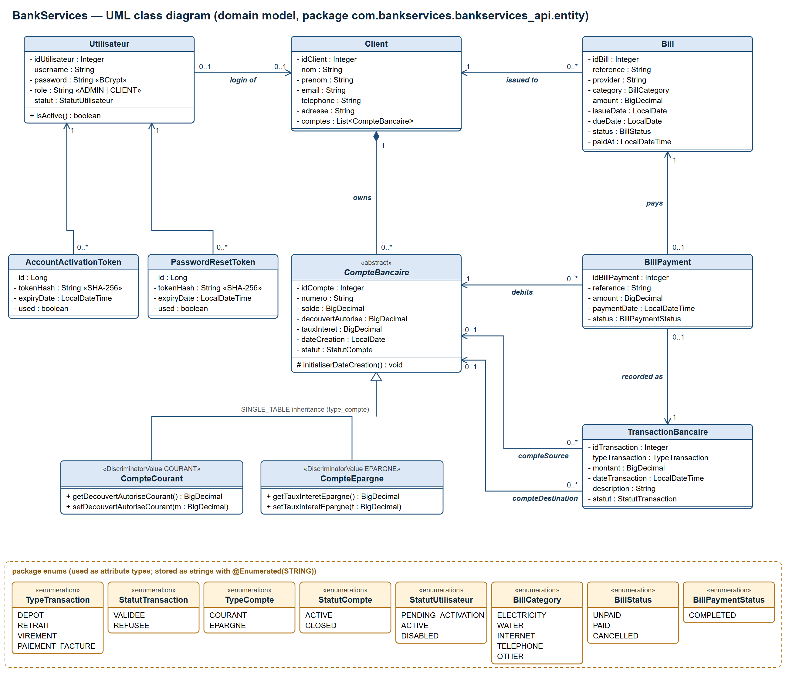
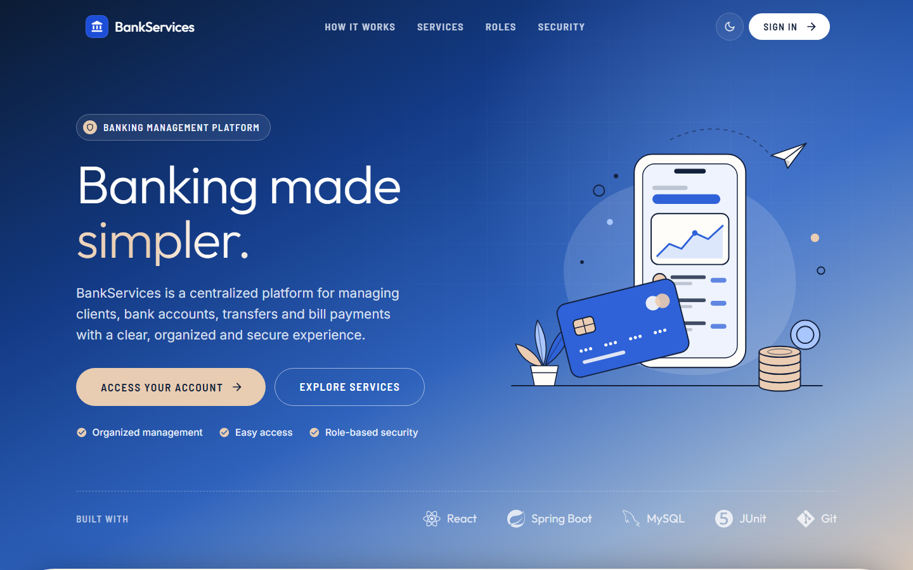
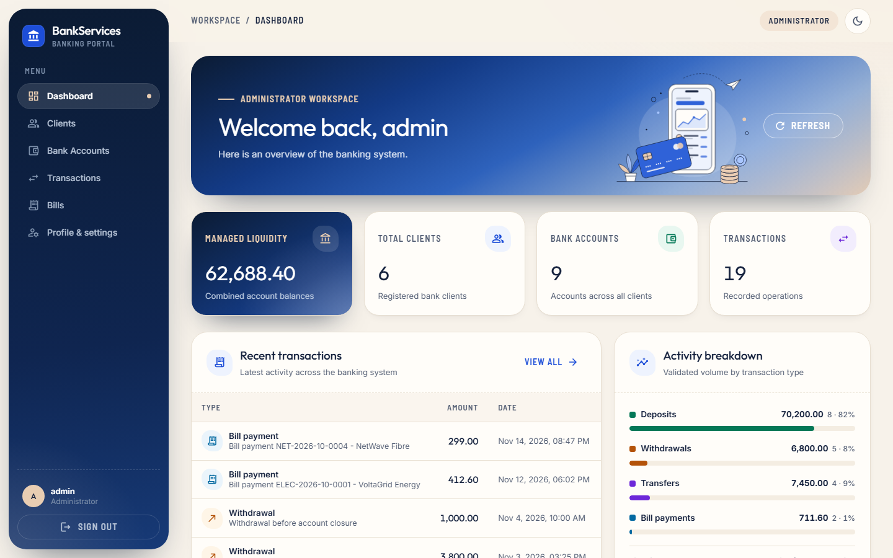
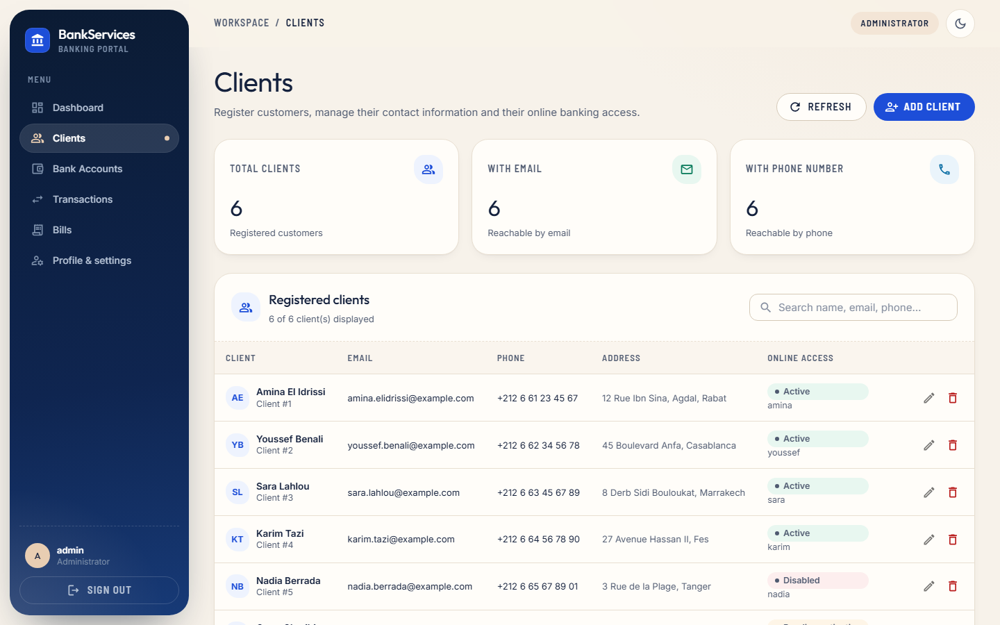
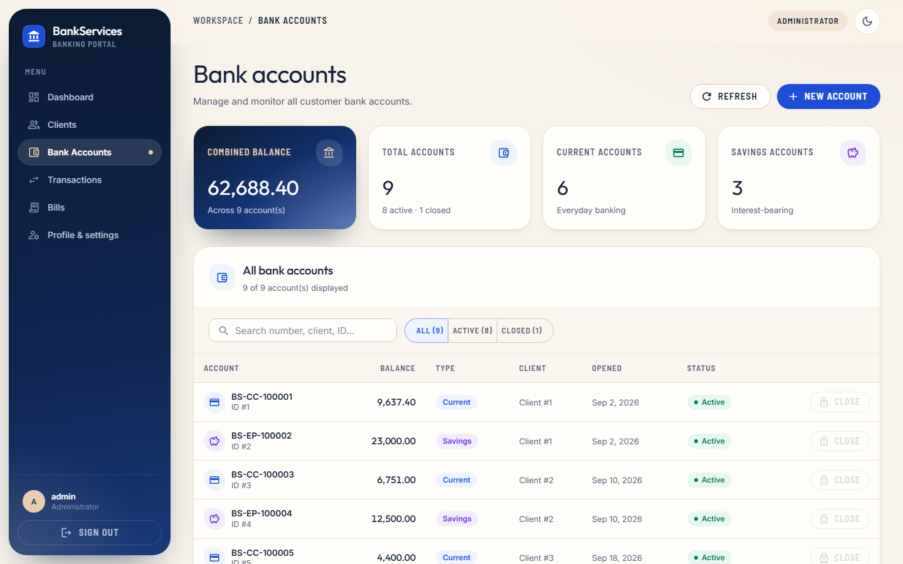
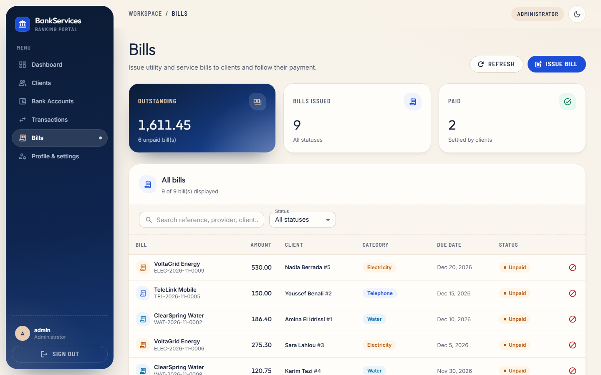
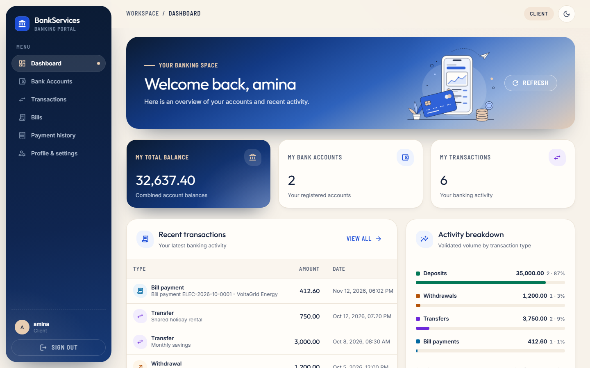
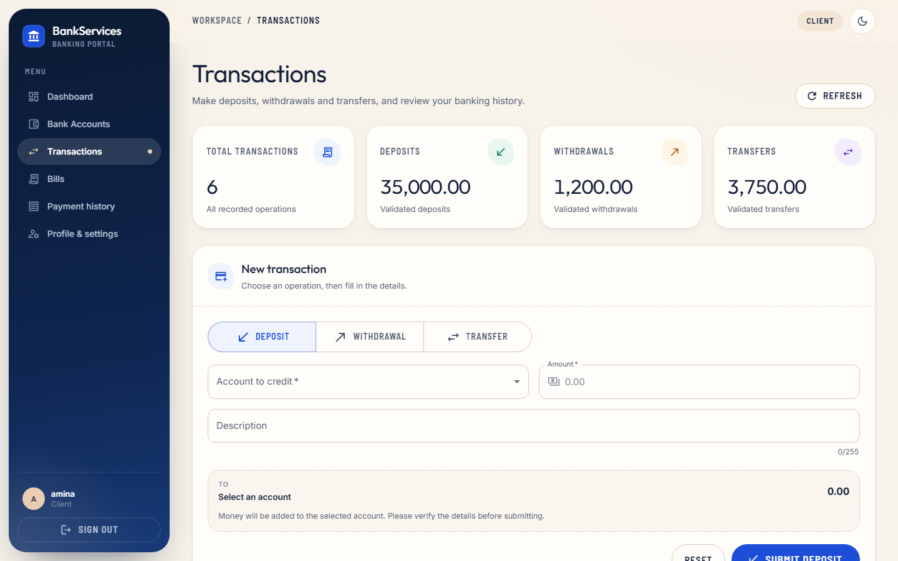
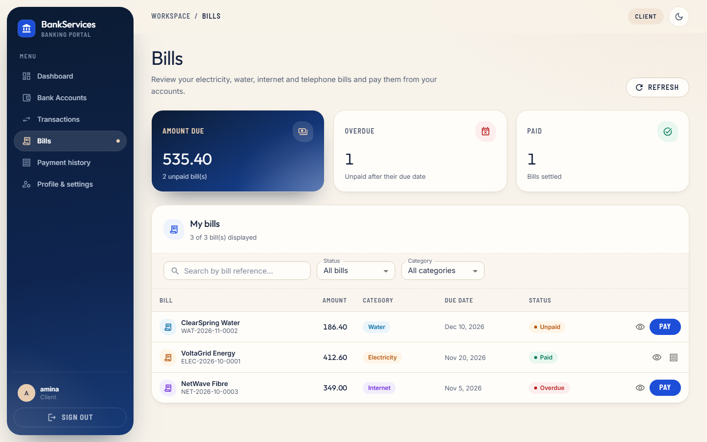

| Repository folder | Bank_Services/ (backend, frontend, database, docs) |
| Date | November 2026 |
| Test status | Backend: 451 automated tests (JUnit 5) – 0 failure · Frontend: 32 tests (Vitest) – 0 failure |
BankServices is a web application that digitises the everyday operations of a retail bank branch. It replaces paper forms and spreadsheets with a single, secure platform where bank staff manage customers and accounts, and customers consult their accounts, move money and pay their bills online.
The project pursued four objectives: (1) model the core banking domain correctly – customers, current and savings accounts, transactions and bills; (2) guarantee the consistency of balances even under concurrent operations; (3) enforce strict role-based security so that a customer can never see or use another customer's money; (4) deliver a modern, responsive interface backed by an automated test suite.
| Actor | Main features |
|---|---|
| Administrator (bank staff, role ADMIN) |
Dashboard with global indicators (liquidity, clients, accounts, activity breakdown) · create / edit / delete clients · register a client and send an activation e-mail · open current (courant, with authorised overdraft) or savings (épargne, with interest rate) accounts · close / reopen accounts (only with a zero balance) · deposits, withdrawals and transfers for any account · issue and cancel bills, search bills by status, category or reference. |
| Client (customer, role CLIENT) |
Activate the online account through a one-time link and choose a password · personal dashboard · view own accounts and full history · deposits, withdrawals and transfers between own accounts · list unpaid / paid / overdue bills and pay them from an account · payment history and printable receipts · forgotten-password flow. |
| System | E-mail notifications sent after the database commit · rate limiting of sensitive endpoints (login, transfers, bill payments) · automatic database migrations at start-up. |
−decouvertAutorise (overdraft limit; always 0 for savings accounts).UNIQUE constraint on bill_payment.id_bill); a payment debits the account, creates a PAIEMENT_FACTURE transaction and marks the bill PAID in one atomic transaction.ACTIVE logins may authenticate; PENDING_ACTIVATION and DISABLED logins are refused with an explicit message.The application follows a client–server, three-tier architecture. A React single-page application talks over HTTP/JSON to a stateless Spring Boot REST API, which persists data in MySQL. Inside the API, code is organised in classical layers: each layer only depends on the one below it.
/api/**@Transactional| Concern | Choice | Justification |
|---|---|---|
| Backend language | Java 21 (LTS) | Strong static typing, mature ecosystem, records and modern switch; BigDecimal for exact money arithmetic (no floating-point errors). |
| Backend framework | Spring Boot 4.1 (Web MVC, Data JPA, Validation, Security, Mail) | Industry standard; dependency injection, declarative transactions and security reduce boilerplate and errors. |
| Persistence | MySQL 8 + Hibernate/JPA + Flyway | Relational model fits banking data (foreign keys, CHECK constraints as a last line of defence). Flyway versions the schema (V1–V3) and creates it automatically on a fresh database. |
| Concurrency | Pessimistic locks (SELECT … FOR UPDATE) | Two simultaneous withdrawals cannot both read the same balance; accounts are locked in ascending id order to avoid deadlocks in transfers. |
| Security | Spring Security, stateless JWT (jjwt), BCrypt | Stateless tokens suit a SPA; passwords hashed with BCrypt; activation and reset tokens stored only as SHA-256 hashes; ownership checks in services; error responses never leak internals. |
| Abuse protection | Bucket4j + Caffeine | Token-bucket rate limiting (HTTP 429 + Retry-After) on login, activation, password reset, transfers and payments. |
| Frontend | React 19, Vite 8, MUI 9, Tailwind 4, React Router 7, Axios | Component model and hooks, very fast dev server, accessible ready-made components; Axios interceptors add the JWT and handle 401/429 globally. |
| Tests | JUnit 5, Mockito, AssertJ, MockMvc, H2; Vitest + Testing Library | Fast, isolated tests that never touch the real database or SMTP server (in-memory H2, mocked mail sender). |
CompteCourant and CompteEpargne extend the abstract CompteBancaire and are stored in one table compte_bancaire with a discriminator column type_compte. This keeps queries simple (one table for all balances) while CHECK constraints guarantee that only current accounts have an overdraft and only savings accounts have an interest rate.The diagram below shows the domain model (JPA entities and enumerations). A Client owns zero or more bank accounts (composition: deleting a client deletes its accounts). An optional Utilisateur is the online login of a client (administrators have no client). A TransactionBancaire references a source account, a destination account or both, depending on its type. A Bill is issued to a client; its BillPayment links the bill, the debited account and the corresponding transaction.

docs/uml/class-diagram.svg, .puml and .mmd).Beyond the entities, the backend contains 7 REST controllers, 12 services, 8 Spring Data repositories, request/response DTOs (entities are never exposed directly), a global exception handler and a rate-limiting module. The layered class diagram is provided in docs/uml/architecture-diagram.puml.








The backend suite contains 451 tests (command mvnw test, ≈ 1 min) and the frontend 32 tests (npm test); all pass. Tests run against an in-memory H2 database and a mocked mail sender, so they need neither MySQL nor an Internet connection. The principal banking operations are covered by pure unit tests (Mockito) of the service layer: for example transfer_movesAmountAndConservesTotalMoney checks that a transfer of 250.00 leaves the sum of both balances unchanged.
| Test class | Principal operations verified (examples) |
|---|---|
TransactionServiceTest | Deposit increases the balance · withdrawal within / beyond the overdraft · savings account cannot go below 0 · transfer moves the amount and conserves total money · same-account transfer rejected · closed or unknown account rejected with balances unchanged · accounts locked in ascending id order · client cannot use another client's account · zero/negative/null amount rejected. |
CompteServiceTest | Opening current / savings accounts with defaults · negative overdraft or rate rejected · closing only with zero balance · reopen. |
BillPaymentServiceTest | Payment debits the account, records the transaction, marks the bill PAID and returns a masked receipt · exact balance and overdraft allowed · already paid, cancelled, foreign or unknown bill rejected with nothing changed. |
ClientServiceTest, BillServiceTest | CRUD of clients, unique e-mail, bill creation, cancellation, filters and overdue flag. |
AuthServiceTest, JwtServiceTest, PasswordResetServiceTest, AccountActivationServiceTest | Login with BCrypt, pending/disabled logins refused, JWT generation and validation, single-use expiring tokens. |
| Controller, repository, integration and security tests | HTTP status codes and validation (MockMvc), JPA mappings and locks, end-to-end flows, SQL-injection and rate-limit tests, concurrent payments of the same bill debit exactly once. |
The file database/seed_data.sql (identical to the Flyway script db/demo/V100__demo_data.sql loaded automatically with the demo profile) contains invented data designed to exercise every rule: 6 clients, 7 logins, 9 accounts, 19 transactions, 9 bills and 2 bill payments. Account balances are consistent with the transaction history.
| Login / password | Scenario it lets you test |
|---|---|
admin / Admin@2026 | Back office: all clients, accounts, transactions and bills. |
amina / Client@2026 | Current + savings account; one paid, one unpaid and one overdue bill; transfers between own accounts. |
youssef, sara / Client@2026 | Ordinary clients with history and unpaid bills. |
karim / Client@2026 | Current account at −300.00 (within a 1,500 overdraft) and a closed savings account. |
nadia / Client@2026 | Login DISABLED: sign-in refused (HTTP 403). |
omar | Login PENDING_ACTIVATION: the administrator can send an activation e-mail. |
A programming paradigm is a style of structuring programs and reasoning about computation. Modern languages are multi-paradigm: Java and JavaScript both allow imperative, object-oriented, functional and event-driven code. BankServices deliberately combines several paradigms, each where it fits best. This section compares them and shows how each one appears in the project.
| Paradigm | Core idea | Strengths | Weaknesses |
|---|---|---|---|
| Imperative / procedural | Sequence of instructions that modify state; code grouped in procedures. | Close to the machine, easy to follow step by step, efficient. | Shared mutable state becomes hard to reason about as programs grow; weak modularity. |
| Object-oriented (OOP) | Objects bundle data and behaviour; encapsulation, inheritance, polymorphism. | Models real-world entities naturally; modularity, reuse, maintainability of large systems. | Deep hierarchies and mutable objects can create coupling; risk of over-engineering. |
| Functional | Computation as evaluation of (pure) functions; immutability, higher-order functions. | Predictable, easily testable, composable; safe for concurrency. | Learning curve; pure functions alone cannot express I/O and persistent state; may cost memory. |
| Declarative | Describe what is wanted, not how (SQL, annotations, JSX). | Concise, less error-prone; the engine optimises execution. | Less control; behaviour is hidden in the framework and harder to debug. |
| Event-driven | Program flow determined by events and their handlers. | Loose coupling, reactive user interfaces, asynchronous processing. | Control flow is implicit; ordering and error handling are harder to follow. |
Object-oriented – the domain model. Entities encapsulate their state behind getters/setters; CompteCourant and CompteEpargne inherit from the abstract CompteBancaire, and services manipulate the abstract type polymorphically (a transfer works on any account). Dependency injection through constructors and interfaces (JpaRepository, RateLimitBucketStore) applies the dependency inversion principle, which is what makes services testable with mocks.
Imperative – the critical algorithms. The money-moving logic is written as explicit sequential steps (lock, check ownership, check status, compute, update), because the order of operations matters for correctness and auditability:
BigDecimal newBalance = source.getSolde().subtract(request.getMontant()); checkAvailableBalance(source, newBalance); // throws InsufficientBalanceException source.setSolde(newBalance); // state mutation, inside @Transactional
Functional – data transformation. Filtering and mapping collections use Java Streams and lambdas, which are side-effect free and read like a pipeline (excerpt of BillService.getClientBills):
return billRepository.findByClient_IdClientOrderByDueDateDesc(client.getIdClient()).stream()
.filter(bill -> category == null || bill.getCategory() == category)
.filter(bill -> referenceFilter == null
|| bill.getReference().toUpperCase(Locale.ROOT).contains(referenceFilter))
.map(bill -> toResponse(bill, paymentsByBill.get(bill.getIdBill())))
.toList();
On the frontend, React components are functions of their props and state (UI = f(state)); hooks (useState, useMemo, custom useCountUp) and immutable state updates follow the functional style, and helpers such as formatMoney are pure functions, unit-tested with Vitest. Immutable Java records are used for events.
Declarative – configuration and queries. Behaviour is declared rather than coded: @Transactional (atomicity and rollback), @PreAuthorize/URL rules (security), Bean Validation (@NotNull, @Positive, @Pattern), JPA mappings (@Entity, @Inheritance), JPQL with @Lock(PESSIMISTIC_WRITE), SQL migrations with CHECK constraints, and JSX describing what the screen should look like.
Event-driven – notifications and UI. Services publish an AccountNotificationEvent; a listener reacts only after the commit, so an e-mail is never sent for a rolled-back operation and a mail failure never cancels a payment:
@TransactionalEventListener(phase = TransactionPhase.AFTER_COMMIT)
public void handleNotification(AccountNotificationEvent event) { notificationService.sendEmail(...); }
In the browser, every interaction (click, input, HTTP response, Axios interceptor on 401/429) is handled by event callbacks.
| Criterion | Imperative | OOP | Functional | Declarative | Event-driven |
|---|---|---|---|---|---|
| Modelling the bank domain | Weak | Excellent | Medium | Good (JPA) | — |
| Correctness of balances | Explicit control | Good | Good (no hidden mutation) | Excellent (transactions, constraints) | Risky if misused |
| Testability | Medium | Good (mocks) | Excellent | Needs integration tests | Medium |
| Concision / readability | Verbose | Medium | High | High | Medium |
| Decoupling | Low | Good | Good | Good | Excellent |
BankServices delivers a complete, tested banking workflow: client and account management, deposits, withdrawals, transfers with overdraft rules, bill issuing and payment with receipts, account activation and password reset, all protected by JWT authentication, ownership checks, rate limiting and database constraints. The layered Spring Boot architecture, the React SPA and the 480+ automated tests make the project easy to run, verify and extend.
Possible improvements: scheduled monthly interest for savings accounts; transfers to other customers with beneficiary validation; pagination of long histories; PDF statement export; a Redis store for rate limits to run several backend instances; Docker Compose packaging and a CI pipeline (GitHub Actions) running both test suites on every push.